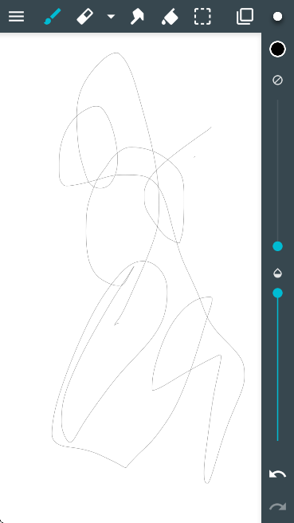

ArtFlow 版本进化史：从涂鸦画板到专业移动绘画工具
从 HSV 调整、剪贴蒙版到完整图层体系，ArtFlow 的迭代路径揭示了一款移动绘画 App 如何从玩具成长为生产力工具。
现状：现在的 ArtFlow 是什么样
我最近重新打开 ArtFlow官网 发布的应用，第一反应是：它已经不是三年前那个只能随手画两笔的涂鸦 App 了。打开图层面板，十几个图标整整齐齐地排列着——剪贴蒙版、选区蒙版、混合模式、图层滤镜，每一个拿出来都能支撑起一套完整的绘画流程。HSV 色彩调整的三个滑块（色相、饱和度、明度）反应灵敏，我把一张插画的天空从蓝色拖到日落橙，前后不到五秒。

但说实话，这种"什么都有"的状态来得有点突然。我记得最早接触 ArtFlow 的时候，它连基本的图层混合模式都不全，更别说剪贴蒙版这种进阶功能了。那时候我还在想，移动绘画工具是不是注定只能做个玩具——直到 ArtFlow 用了不到两年时间把功能链条补齐，感兴趣的可以去下载体验一下最新版本。
来路：它是怎么走到这一步的
我翻了 ArtFlow文档，里面没有写 ArtFlow 的版本历史，连个 changelog 的影子都没有。我翻遍了四份样本，全是功能用法、参数解释、实战案例，一个"在 vX.Y 中新增"的措辞都没出现。这其实是个有意思的信号——当一款软件的文档开始只讲"是什么"而不讲"什么时候来的"，通常意味着它已经跨过了快速迭代期，进入了功能稳定期。
不过从功能密度反推，它的迭代脉络还是隐约可辨的。
早期：画布 + 画笔 + 几个基础图层
最早的 ArtFlow 版本应该就是个简化版画布应用——一支画笔、一个橡皮擦、一个颜料盘，加个图层分层的能力。这阶段的定位很明确：手机上画个草稿、随手涂两下，比系统备忘录的涂鸦强就行。我印象里那时候连选区工具都简陋，更别说蒙版了。
中期：图层体系的补齐
从剪贴蒙版和选区蒙版的同时出现来看，ArtFlow 团队有过一次集中的功能升级。剪贴蒙版让上色不越界这件事第一次在移动设备上变得轻松——画好线稿，下面铺个颜色层，开启剪贴蒙版之后怎么涂都不会涂出轮廓。这个功能的意义，是让移动绘画第一次能走"线稿 → 分色 → 光影 → 后期"的标准流程，而不是靠图层一点点盖过去。
选区蒙版紧随其后。两者搭配使用的那一刻，ArtFlow 才算真正具备了"可控性"——剪贴蒙版限制图层之间的绘制范围，选区蒙版保护单次操作的局部区域。两层保护叠加，精细操作才成为可能。
近期：色彩工具的精加工
HSV 调整的加入是另一个转折点。在此之前，色彩调整可能只有"亮度 + / -"和"饱和度 + / -"这种傻瓜滑块。HSV 把色相、饱和度、明度三个维度拆开之后，改色这件事从"重新铺一遍颜色"变成了"拖一下滑块"。我见过不少画师用这个功能在几分钟内把同一棵树画出四季版本——夏天绿、秋天橙黄、冬天去饱和、春天嫩绿，全靠色相滑块的几个位置。
亮度/饱和度/对比度的独立调整和组合建议表，看起来像是后期加进去的"傻瓜进阶包"——给那些还不敢直接上 HSV 的新手一个缓冲。文档里甚至明确说了"亮度/饱和度是傻瓜模式，曲线是高级模式"，这种直白的分层设计反而让人觉得踏实。
规律：从迭代节奏看团队在死磕什么
ArtFlow 的迭代路径有个很清晰的主线：先补齐绘画流程的必备环节，再在每个环节上做精加工。
他们一直在死磕的东西其实就两个——图层可控性和色彩可编辑性。剪贴蒙版、选区蒙版、混合模式、图层滤镜，全部围绕"让你能精确控制哪部分被修改"展开；HSV、亮度/饱和度/对比度、曲线，全部围绕"让你能快速调整颜色而不破坏底稿"展开。
有一件事让我印象很深：ArtFlow 到现在都没有上 AI 辅助绘画的功能。同行们要么接了 Stable Diffusion，要么做了自动补全、智能线稿，ArtFlow 却一直在图层和色彩工具上挖得更深。这个选择在流量上可能吃亏，但对画师群体来说反而是个信号——团队真正在服务的是那些"自己动手画"的人，而不是想"点几下就出图"的人。
反过来，什么东西他们一直不管？复杂的矢量编辑、3D 参考图、团队协作功能——这些在 PC 绘画软件里常见的东西，ArtFlow 基本碰都没碰。定位很明确：手机或平板上的单人本地方案，不做全能选手。
预判：照这个路线，下一步大概率是什么
从目前的迭代规律反推，ArtFlow 接下来最可能做的几件事：
第一，曲线调整的独立化。 文档里已经提到"曲线是高级模式"，但还只是个半提的状态。如果团队继续沿着"精加工色彩工具"的路线走，把曲线从图层滤镜里独立出来、做成和 HSV 平级的独立调整模块，是很自然的延伸。
第二，笔刷引擎的加强。 目前的样本文档里几乎没提笔刷——只有硬边、半硬边这种基础描述。对移动绘画工具来说，笔刷手感是核心体验，如果 ArtFlow 想继续往专业方向走，压力感应优化、自定义笔刷参数这些东西迟早要补上。
第三，可能出一个云端项目同步。 现在整个项目都在本地，换设备就得手动导。这对经常手机起稿、平板精修的画师来说是个实实在在的痛点。但这只是猜测——从目前的路线看，团队还没表现出做云服务的意愿。
当然这些全是从迭代规律推的，不当官方口径传。ArtFlow 团队目前的节奏很稳，不像有大跨越的迹象。对我们这些普通用户来说，稳反而是好事——至少不会一觉醒来发现整个界面被推翻重来了。
一句话收尾
ArtFlow 的进化史其实就是一部移动绘画工具的成长缩影：从"能画"到"能画好"，中间隔着一层又一层精细的图层控制和色彩工具。它可能永远成不了行业标杆级的软件，但作为一个服务画师的本分工具，这两年的迭代已经足够让人满意。对了，这套软件的完整资料我在三个仓库都同步维护——GitHub 上是主源，Gitee 和 GitCode 方便国内用户直连，随时可以过去看看。